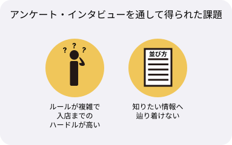
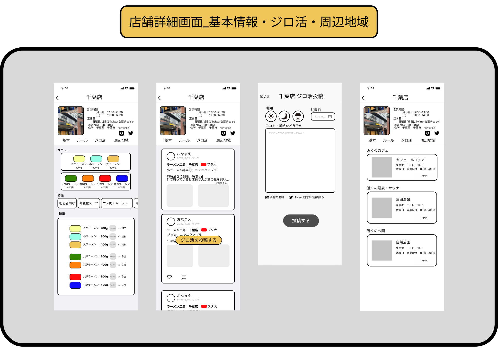

先に最終的なUIデザインを確認したい方は下記からご確認ください!!
制作期間
- 個人制作なので１人のみ
使用ツール
- Figma
- GoogleForm
- Illustrator
OVERVIEW
制作背景とプロセス
昨年やっと直系の二郎へ訪れたのをきっかけに、初心者が二郎へ行くのにはハードルがあると感じました。特に、ラーメン二郎はインスパイ系(直系ではないお店のこと。二郎系とよばれていることが多い)のお店とは違い並びの人数や、独自のルールが多くそれらによって、インスパイア系のお店には訪れたことはあるが、直系のお店に行くことにハードルを感じている人が多いのではないかと思い、そこに課題を見出しました。 自分としても、直系店には4店舗(2022年5月現在)しか行っておらず、初心者の方が訪れるには中々ハードルが高いと思い今回ラーメン二郎に関するサービスやアプリの制作を行いました。
UNDERSTANAD
課題の理解のためのにアンケート・ヒアリングを実施!!
最初に、二郎に行くことに対してハードルを感じている方々へ、アンケートとヒアリングを行いました。アンケートで、課題感や現状についてざっくり聞き出してから興味深いトピックに関してヒアリングしていくという方法でインタビューを行いました。

アンケート・ヒアリングから得られた課題感
上記調査を実施した結果、ハードルを感じてしまう大きな理由としては、独自のルールが存在していて、怖いなどの意見が多く見受けられました。特に、インスパイア系には行ったことはあるが直系には行ったことがない方がそのような印象を持っていることが多く(製作者自信も同じ意見)、二郎について深くは知らないが暗黙の了解や独自ルール・ロット制などについてなんとなく知識がある・噂できいたことがある方がほとんどでした。 また、過去に二郎に行こうとして事前にその店舗のルールやどれくらいの量なのかなど調べたが知りたい情報に辿り着けずに断念したという声もありました。
二郎コアファン層が抱える課題
今回、初心者層だけではなく、二郎コアファン層の方、1名にもアンケートに協力していただきました。コアファン層の方が、抱える課題として挙げられたのが、並び方に関する問題です。 二郎では、並びの最中に待ち合わせなどで、列の途中から入ることは禁止されています。 Twitterなどでも、「二郎 割り込み」などで検索すると結構な数のお怒りのTweetが見受けられます。 コアファン層の方々は、概ね課題など抱えていないなど、勝手に仮説を立ててましたが(ヒアリングの重要性を再認識しました!!)、全然外れていて、現状抱えている課題として、並びの割り込みなどが多いことがわかりました。ラーメン二郎の並び方は、基本的に後から合流などで先に並んでいる人の後に並ぶことは禁止されています。一般的なお店の並びでは、あまりイメージないかもしれないですが二郎では、 こういったルールが公式とファン層の中では当たり前となっています。
アンケート・ヒアリングから得られたニーズ
現状考えられる解決策(仮説段階)
課題感とニーズから、現状考えられる解決策の仮説として、初心者が二郎について店舗独自のルールや量などの、知りたい情報がまとめられているデーターベースのサービスを作ることで解決できるのではないかと仮説を立てました。また、これらのデーターベースがあることで、現状の二郎ファン層の方が抱える課題、主に列の割り込み問題に関して、初心者層を啓蒙できるようなサービスとなるため、二郎ファン層と初心者層の両方が抱える課題を解決し、双方楽しい二郎生活が送れるようになるのではないかと考えました。 また、店舗のルールやメニューがわかるだけではなく、少し踏み込んだ二郎に関する知識も提供することで、より美味しい二郎の食べ方を追求できる(自分も含め)サービスを目指しました。 初心者そうとコアファン層が混じり合うようなコミュニティサービスにもなることを目指しました。
IDEATION&DECIDE
ユーザー像の定義
サービスを具体化するために、アンケートやインタビューで得られた声からユーザー像の定義を行いました。
機能定義① ルール情報の検討
ユーザーヒアリングで得られた、初心者層の二郎に対するハードルなどを言語化して、初心者層が初めて二郎に行く際に知りたい情報(主にルールなど)の洗い出しを行いました。 はじめに、各店舗のルールなどをWebなどで調査、 一般的に二郎に行くまでの行動フローを作成し、必要なルールの洗い出し、 課題を抱えているポイントを図解しました。
洗い出しが終わった後は、全店舗で共通しているルールのグループ化を行いました(例.コールの仕方やラーメンの量が一般的なお店よりかなりボリュームがあることなど) 共通化を行った後は、各店舗での詳細なルールをまとめました。店舗毎のルールは、並びから〜入店までの間に起こるor起こすアクションをベースにグループ化を行いました。(店外での並び方・店内での並び方・麺量・食券購入のタイミング・麺の硬さの伝えるタイミング) 以上で、かんたんに二郎(全店舗)について学べる共通ルールコンテンツと 店舗毎に学べるガイドラインの２つのコンテンツに必要な情報をまとめました。
機能定義② タイムライン機能の検討
次に、ユーザー同士で知識やラーメン二郎での体験を共有できるサービスとしても機能させたいため、口コミやタイムラインの機能の検討を行いました。 ルールがまとまっているコンテンツだけだと、仮にインストールして利用していただけても、店舗に行って終わりという体験になってしまいます。アプリの認知拡大なども兼ねてレビューや口コミ、タイムライン機能や行った店舗の活動記録も投稿できる機能も搭載すること決定しました。 また、初心者層がコアファン層の投稿を閲覧することで、 自分が知らなかった美味しい二郎の食べ方など、 Tipsをどんどん学んでいけるような体験を目指しました。
PROTOTYPE
Lofiプロトタイプ
機能定義が決定したので、ルールやタイムライン、アプリを使用した時のユーザテストも兼ねて、プロトタイプの作成を行いました。
機能定義で決定したサービスでの体験を実現するためにデザインを行いました。これらを基にテスト用のプロトタイプ(Lofiプロト)を作成しました。
検索画面
ボトムナビゲーションのうちの一つのホーム画面です。ホームでは行きたい店舗の検索やフィルタリングでアクション数を少なく店舗情報までアクセスできるようなデザインにしました。 地図をホームに表示させるUIパターンも検討したが、二郎の全店舗数は41店舗なので、地図情報などは、メインでデザインしない方向性にしました。

店舗ルール
店舗ルールでは、並び方から食券購入のタイミング、麺量の調整タイミング、トッピングのタイミングなど、細かい粒度で説明できるような構成にしました。

ジロ活投稿画面・タイムライン画面
ジロ活投稿画面は、店舗の詳細画面からも投稿できるかつ、ボトムナビゲーションの一つであるタイムライン画面からも投稿できるようなデザインにしました。 また、ジロ活の投稿内容は文章だけでなく食べた二郎の写真やトッピングなどなども記載できるようにして、 十人十色な二郎の食べ方が学べるようにデザインしました。

マイページ画面
マイページ画面では、基本的なプロフィールだけではなく、過去のジロ活投稿や、個人がよく行く二郎の店舗などが統計的にわかるジロ投稿記録も搭載することで、過去の活動を振り返りやすくしたり、自分がよく行った二郎が簡単にわかるようにしました。 マイページ情報は基本的に入力しなくても、検索やルールは調べられる仕様になっています。 投稿などを行いたい場合に、アカウント作成とマイページ編集を行ってもらう導線にしました。 過去の投稿などを振り返りやすいコンテンツとデザインにしました。

プロトタイプ検証内容・目的
検証は、アンケートとヒアリングに協力していただいた初心者層の2名に対してい実施しました。各画面で、行ってほしいタスク内容を事前に共有し、それらが問題なく実行できるかどうか ルールなどの図が理解しやすいなどの観点からテストを行いました。
検証結果 ヒアリング
ヒアリングの結果から、現状のルールコンテンツで十分に理解できると回答いただき、店舗ルールコンテンツの現状のデザインで進めることを決定しました。 操作感に関しては、テスト時のルール説明のデザインでは、情報へのアクセス性が良くないとの回答をいただきました。 また、2名とも現状の機能でインストールしてみたいとの意見をいただいたので、アプリとして制作してみる価値は十分にあると感じ、 コア機能をよりよくするための改善を行いました。
ヒアリングを基に改善案 UIの修正
改善UI① ルールコンテンツの情報設計
ヒアリングで得た課題としては、ルールなどをピンポイントで知りたいとの課題があがりました。 プロトタイプ時のルール説明のコンテンツ構造では、例えばこの店舗のトッピングのコールの仕方だけ知りたいなど、ピンポイントで知りたい情報にアクセスしづらい構造となっていました。必要な情報へのアクセス改善のため情報設計から見直す修正を行いました。 また現状のUIだと、流れに沿ったルール説明しかしておらず、このコンテンツでは、事前に何がわかるのかイメージしづらいことがわかりました。 追加の改善案として、ルールの他にピンポイントでルールを説明できるコンテンツを載せることを決定しました。ピンポイントのルール説明のために新たにTipsというコンテンツを追加することにしました。 Tipsにはコールの仕方や、ロット制について、などの粒度でデザインしました。

また、Tipsの追加だけではなく、店舗のルールも修正を行いました。 まず、店舗ルールの名称をルール→ガイドラインに変更しました。 ガイドラインのトップページには、「このコンテンツを見ることであなたが知れること」のイラストをページ先頭に配置して、ユーザーが手探りの状態でコンテンツを眺めるという体験により、学習負荷をかけないように改善しました。 また、店内での並び~などの流れを一つのコンテンツにまとめることで、ユーザーが このガイドラインを読むことで知りたい情報が知れた!次に行くときも参考にしよう!などの体験を目指しました。
改善UI② 店舗・メニューコンテンツのサムネイルについて
次に改善UIを行った箇所は、店舗メニューの箇所と、検索ページの各店舗のサムネイルに関してヒアリングを基に改善を行いました。 まず、ホーム画面の各店舗のサムネイルに関してですが、サムネイルの写真を実店舗の写真か、その店舗のラーメンの写真にするか自分の中で迷って決められない状況でした。サムネイルに関してよくある飲食店などの口コミサイトの多くは、店舗のサムネイルには看板メニューの写真ではなく実店舗の写真が採用されている傾向にありました。これらのサムネイルに関して、傾向通りに実店舗の写真を掲載することも考えましたが、サムネイルに関しても深堀りしたいと考え、これらに関してのヒアリングも行っていました。ヒアリング前の自分の仮説としては、店舗のサムネイルは看板メニューの方が良いのではないかと考えておりました。しかし、実際にヒアリングをしてみると店舗毎のサムネイルは、実店舗の写真が良いとの内容が得られました。ヒアリング結果から、二郎に行ったことがなにので、お店がどこにあるのか、どのような外観をしているかなどの意見をいただき、サービスの想定ユーザー層なども考慮すると、店舗毎のサムネイルは、 外観やなんとなくの雰囲気がわかる実店舗の写真にすることを決定しました。
DECIDE
追加機能検討
クイズチェックリスト
実際にヒアリングをするなかで、アプリのインストールの価値を質問したところ、このアプリを使用したら、二郎に足を運べそうという意見をもらい、サービスの方向性や、やりたいことが、より言語化することができました、そしてユーザーをエンゲージメントできるサービスということを念頭に置き、再度追加機能の検討を行いました。現状のままでも、店舗ルールについて学べることはある程度実証できたので、あとはルールを学んだ後に実際に行動に移せるかどうかがとても重要なポイントだと考えました。 そこで、一旦サービスをユーザーが様々な状況で使うことを想定し、行動フローの作成を行いました。どんなにルールがわかりやすくても、行動に移さないで、何日も日が空いてしまうとルールを忘れてしまうという問題点があることが予測できます。 ただルールをまとめているだけだとルールの浸透率・理解度のようなものが、深められないと考えました。
ルールや規則を必要な時に必要なだけ見るだけの機能でも十分だと考えましたが、よりユーザーに楽しんでほしい・初めて二郎に行くことに関して自信をもってほしいと考え、ユーザーの行動をエンゲージメントできるサービスにしたいと強く思いました。 そのためには、ルールを読むだけではなく、ルールの振り返りとして簡単なクイズ機能を搭載することで、体験の実現を目指しました。実際にユーザーにとってルールのクイズやチェック的な体験は利用したいかなど、クイズ機能搭載を決定するにあたり、ヒアリングも行いました。 結果としては、ユーザー目線でもクイズがあったらトライしてみたいなどの、 ポジティブな意見をいただけました。また、こういったコンテンツがあると、 ルールだけ見てわかった気が防げるや、行く前の最終確認として十分に機能するなどの 意見をもらい十分に機能搭載の価値があると判断しました。
また、機能搭載に辺り、クイズは強制ではなく任意で行えるようにし、問題数も多くて4~5問にしました。クイズは、シンプルに２択の問題にして、回答負荷をなるべく下げるようにしました。 また、回答を明示するタイミングとしては、一問ごとにしました。そうした理由としては、最終的に5問中いくつ正解でした!という体験にすると、全問正解した場合はそれでもいいかもしれませんが、仮に全問不正解や半分以上間違っていた場合の体験を考慮すると、そうなった場合、負のエンゲージメントとして作用してしまう懸念がありました。それらを踏まえ回答は一問ごとにして、すぐにFeedbackを得られるような体験の方が、 たとえ回答が間違っていたとしても負のエンゲージメントになることは低いと考えデザインを行いました。
UI DESIGN
改善策と新規機能を踏まえ最終的なUIデザインを作成しました。
学んだこと・今後の課題
学んだこと
口コミや、タイムライン等のSNSよりなサービスを考えるのは初めてだったので、情報設計の面で非常に考えさせられました。ただ、単に画面をデザインするのではなく、コンテンツ間の構造(例.タイムラインからも、店舗毎からもジロ活投稿にアクセスできる・できないなどの検討)など、普段見ているSNSアプリはシンプルのように見えてうまく構成されているんだなと感じました(例.Instagramの通知画面から、投稿した内容を閲覧すると半モーダルで表示されているなど)コンテンツ同士のつながりをどうデザインするかなど非常に勉強になりました。まだまだ知識・勉強が足りていないなとも身をもって実感しました。 また、一番このサービス制作でやりたかった、二郎のルールや仕組みを図解して、利用者にわかりやすく伝えることができたのも大きな自信となりました。初期のルールの画面を非常にわかりやすいとの意見をいただけた(2名ですが非常ありがたいお言葉でした)ので、概念図でもシンプルでわかりやすかったら十分にユーザーとコミュニケーション取ることは可能なのだと実感しました。アンケートやインタビュー、テストに協力していただいた方々に深く感謝申し上げます!
今後の課題
自主制作でデザインまで作成しましたが、実際にサービスとしてあったらかなり便利だと思っていますので、サービスとしてリリースしてみたいと考えております... 本ポートフォリオを見てご興味ある方が、もしいらっしゃいましたら気軽にご連絡ください。 製作者自身がまだまだ、ラーメン二郎初心者のため、全店舗のルールや仕組みを身を持って体験できていないので、そこを体験してよりリアルなものを制作していきたいと思います。